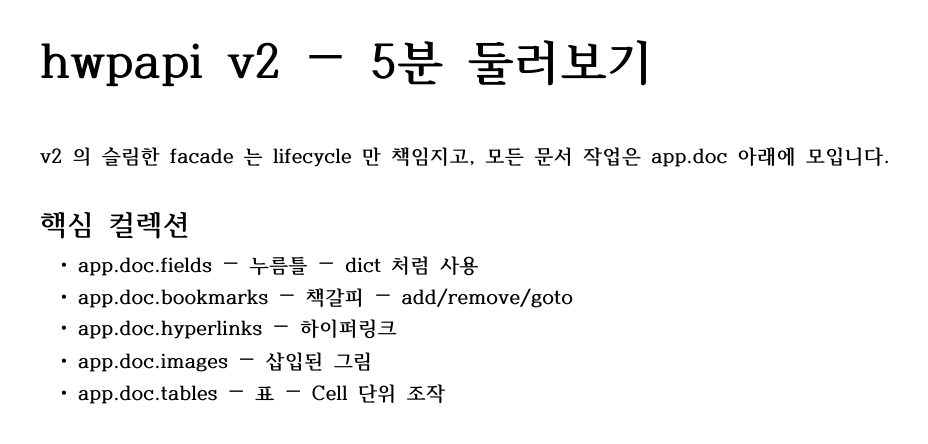

from hwpapi import App
# 1. Open a file — `App` owns lifecycle only.
with App() as app:
app.open("report.hwp")
# 2. Everything document-scoped lives under `app.doc`.
app.doc.insert_text("Hello, 한글!\n")
# 3. Collections are dict-like.
app.doc.fields["author"] = "홍길동"
for name in app.doc.fields.names():
print(name, "->", app.doc.fields[name].value)
# 4. Formatting is a context scope.
from hwpapi.context import charshape_scope
with charshape_scope(app, bold=True, size=14, color="#C0392B"):
app.doc.insert_text("important line\n")
# 5. Need a raw action? Drop into `hwpapi.low`.
from hwpapi.low import actions
# e.g. actions._Action("MovePos")(...)
app.save_as("report.pdf")hwpapi
Pythonic automation for HWP (한컴오피스 한글)
hwpapi
A slim Python facade over HWP’s COM automation — with dict-like collections, context-managed formatting, and a documented escape hatch to the raw action layer.
pip install hwpapi
tests/generate_v2_doc_artifacts.py running real HWP5-minute tour
The blocks above are marked eval: false because they drive the HWP COM server on Windows. Every other code block on the site that does not need HWP runs at render time.
What’s in the box
Two-layer API
App → app.doc for everyday scripts. hwpapi.low.* for raw actions and ParameterSet manipulation when you need it.
Dict-like collections
fields, bookmarks, hyperlinks, images, styles, paragraphs, tables — every collection supports [], in, for, len, filter, names.
Context-managed formatting
charshape_scope, parashape_scope, styled_text snapshot the cursor’s shape on enter and restore it on exit — even if your code raises.
Friendly units
hwpapi.units.mm(210), pt(12), inch(8.27) — no more HWPUNIT arithmetic.
Real exceptions
Every public call wraps pywintypes.com_error as an HwpApiError subclass with a useful message.
Escape hatch, documented
hwpapi.low.actions, hwpapi.low.parametersets, hwpapi.low.engine — the 900+ action wrappers and 130+ ParameterSet classes, cleanly namespaced.
Where to next
- New here? Start with Install → Quickstart.
- Upgrading from v1? The Migration guide has a 1:1 mapping table for every v1
Appmember. - Looking for a recipe? See the Recipes index.
- Need to look up a symbol? Jump to the API Reference.
- Curious why it’s shaped this way? Read the ADRs.